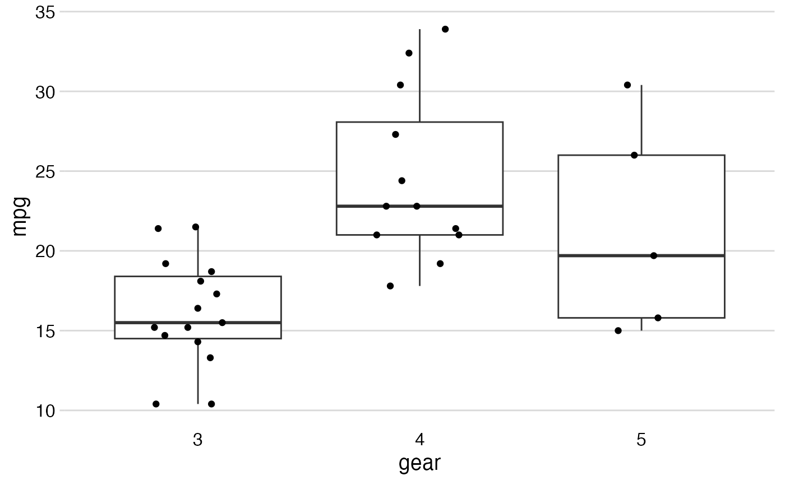

Plots categorical x-axis and continuous y-axis.
Inspired by Nick Cox's Stata plug-in stripplot. As per
geom_boxplot, boxes reach from the first to the
third quartile; whiskers extend 1.5 times the interquartile range
but not beyond the most extreme data point.
stripplot( data, x, y, contrast = NULL, unit = NULL, digits = 2, jitter = TRUE, color = NULL, na.rm = FALSE, printplot = FALSE )
| data | Data frame. Required. |
|---|---|
| x | Categorical variable for x-axis. Required. |
| y | Continuous variable for y-axis. Required. |
| contrast | If added, the mean difference between extreme categories
will be added. |
| unit | Scale to print after the point estimate for the
contrast between extreme categories.
Defaults to |
| digits | Number of digits for rounding point estimate and confidence intervals of the contrast. Defaults to 2. |
| jitter | Avoid overplotting of points with similar values?
Defaults to |
| color | Variable to color data points by. Defaults to |
| na.rm | Remove "NA" category from x-axis?
Defaults to |
| printplot |
|
ggplot object, or nothing
(if plot is sent to graphics device with printplot = TRUE).
Standard customization options for a ggplot object can be added
on afterwards; see example.
#> Warning: Continuous x aesthetic -- did you forget aes(group=...)?# Add mean difference between extreme categories, reduce digits, # add color by 'wt', add different color scale, and label, # all using standard ggplot syntax. mtcars %>% stripplot(x = gear, y = mpg, contrast = "5 vs. 3 gears", unit = "mpg\n", digits = 1, color = wt) + scale_color_viridis(option = "cividis") + labs(y = "Miles per gallon", color = "Weight")#> Warning: Continuous x aesthetic -- did you forget aes(group=...)?